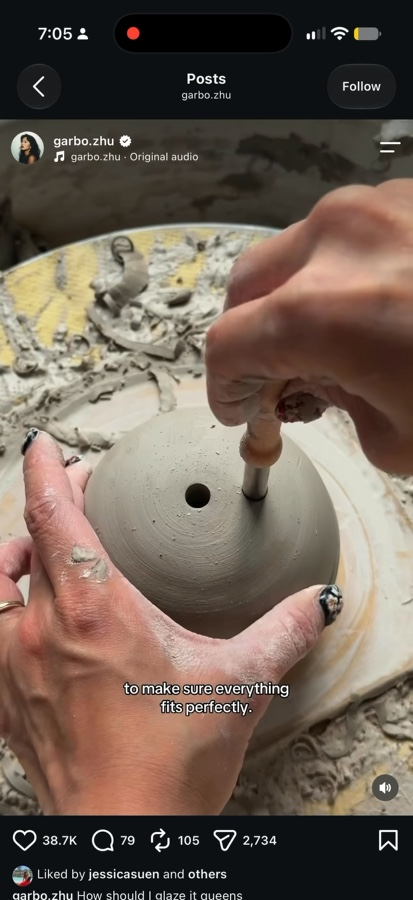
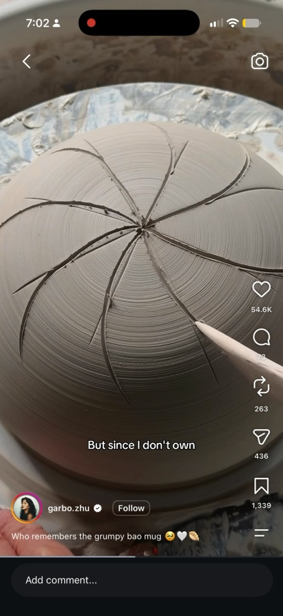
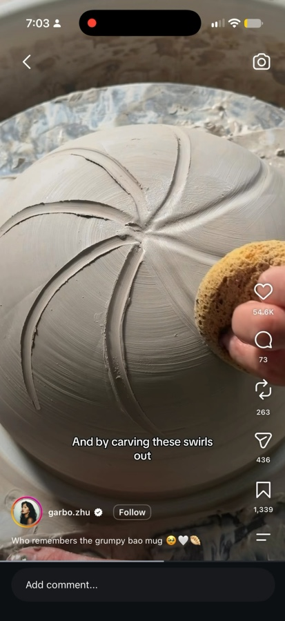
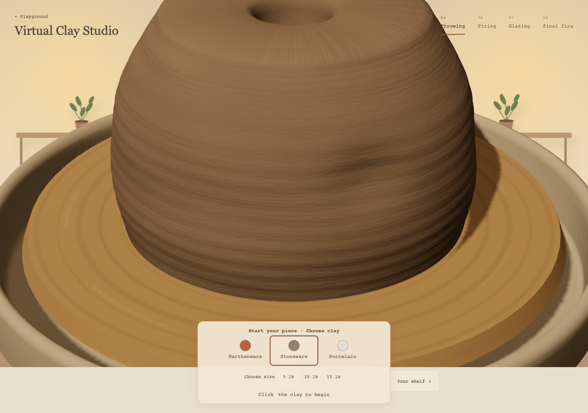
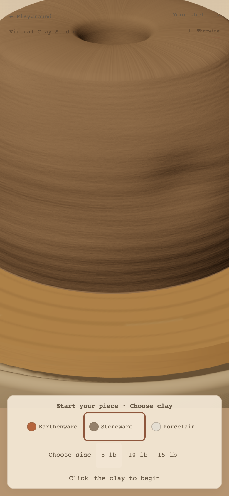
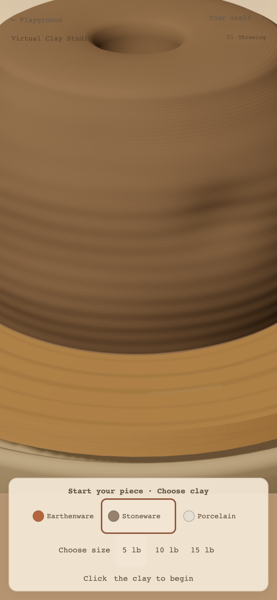
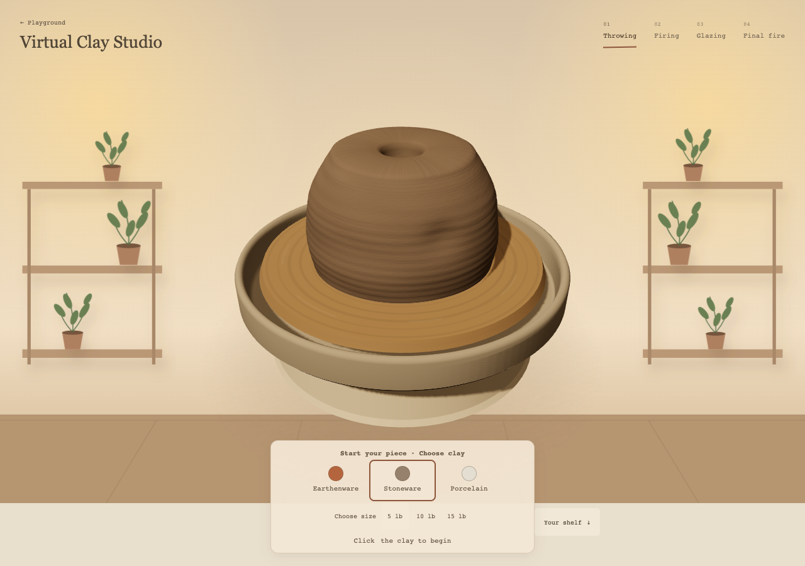
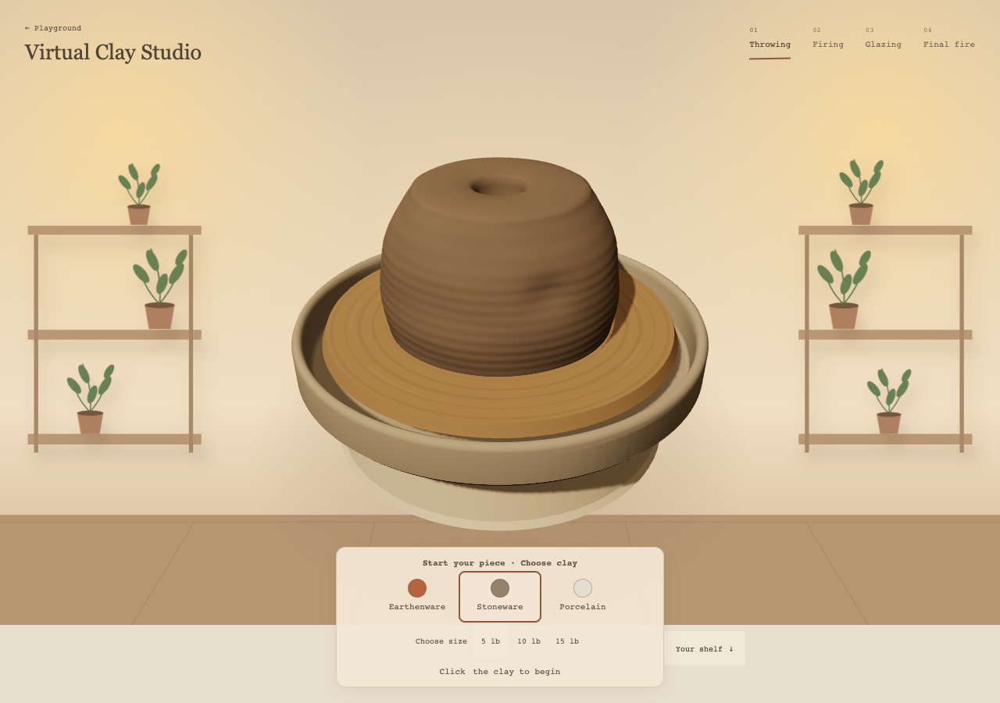
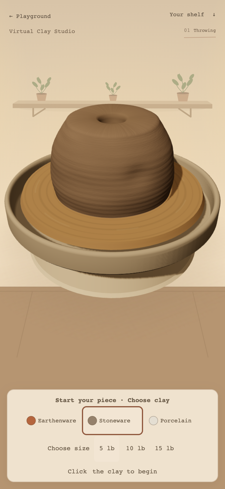

References are visual guides only. The app maps are original deterministic procedural maps. Clay body colors, lighting, geometry, tools, Undo and firing behavior were preserved. The videos show different moisture and working stages; their gray color and exact lighting were not treated as universal clay properties.
19-04-38 recording at ~22.1s; 19-02-39 at ~17.2s and ~22.1s. These are review evidence, never runtime textures.









Phone proxy:390×844/DPR2, renderer cap1.65,4× CPU throttle. Median16.7ms and p95~16.8ms before/after; no sampled frames over33.4ms. No physical phone validation. Geometry and scene composition match across each comparison.